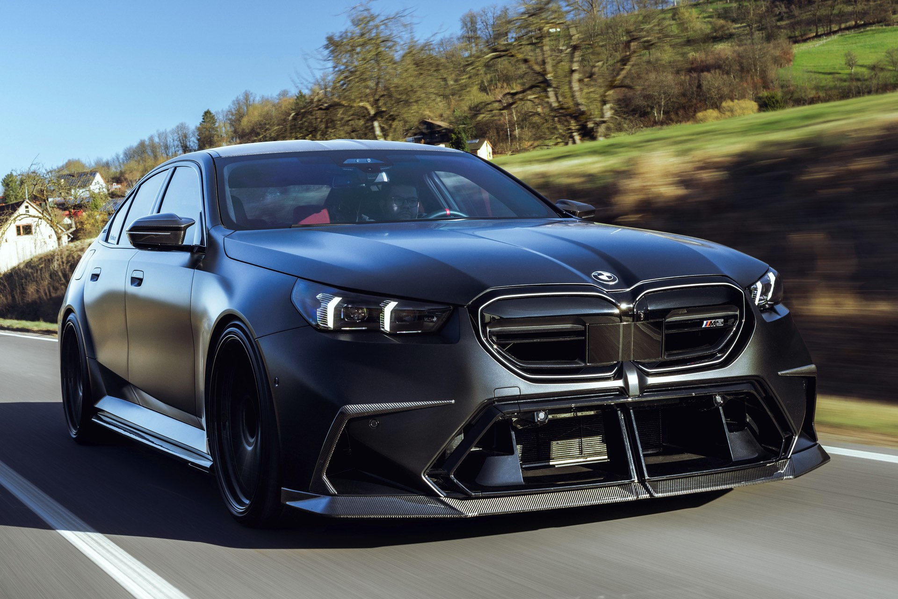
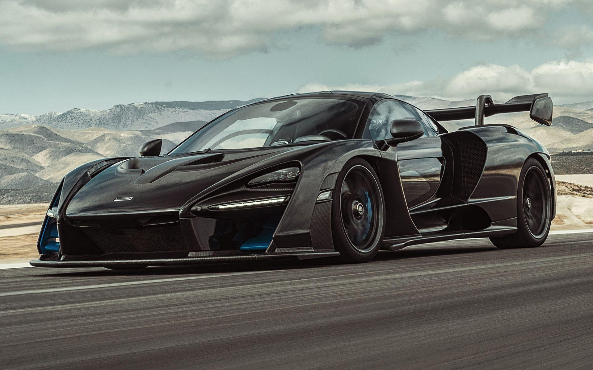
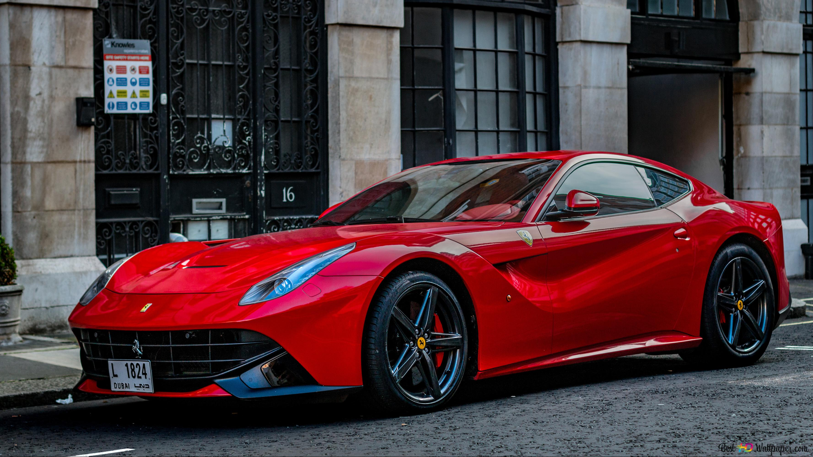
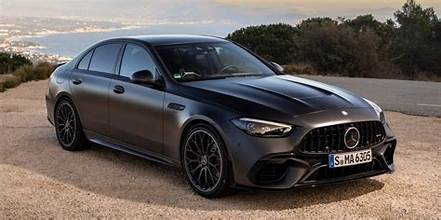
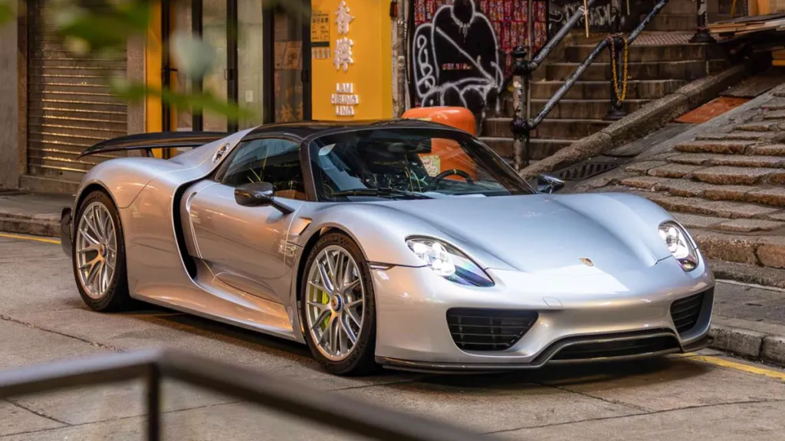
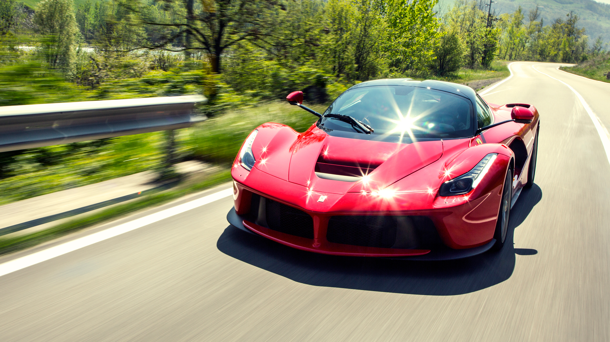
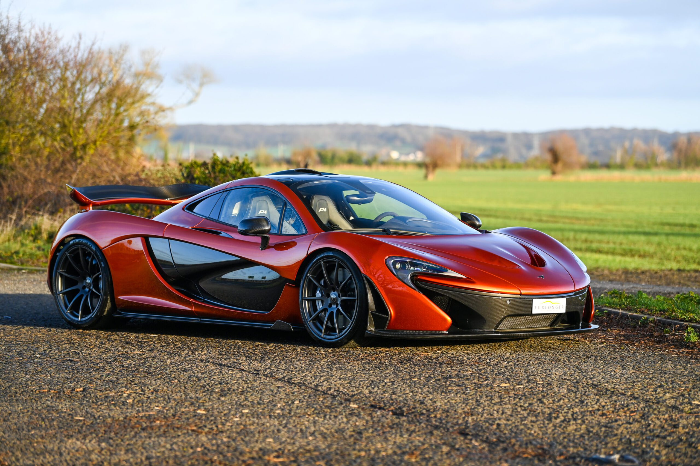
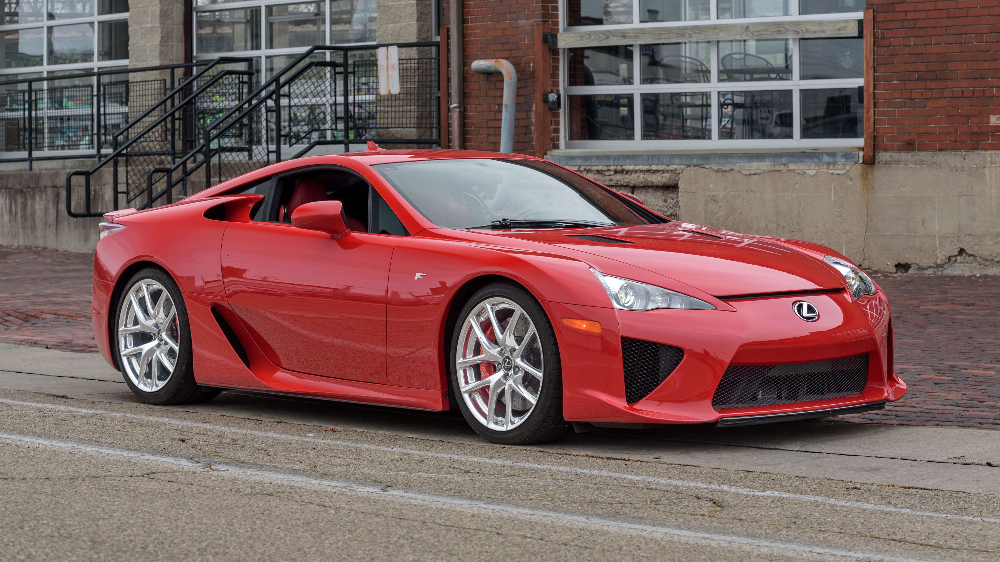
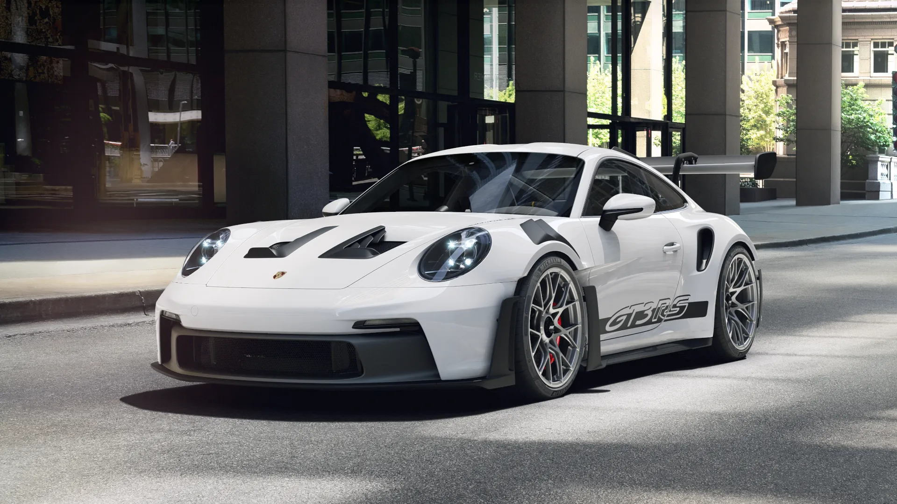
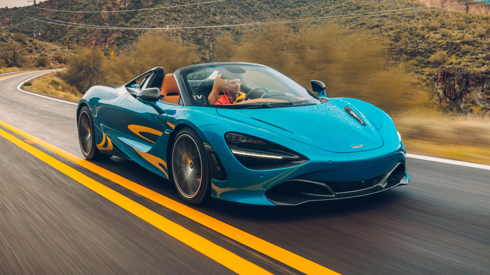

Car Spotlight #1
Car: BMW M5 G90
Description: The BMW M5 G90 is a high-perfomance luxury sedan. It combines everyday comfort with insane speeds, featuring a twin-turbo V8 engine, AWD, and sharp handling. BMW did an amazing job blending luxury and sports into one car.
Basic Specs
- Horsepower: 717 HP
- Top speed: 190 MPH
- Engine:Hybrid twin-turbo 4.4L V8
- 0-60: 3.0 seconds

Car Spotlight #2
Car: Mclaren Senna
Description: The McLaren Senna is a track-focused hypecar built for extreme perfomance. It includes ultra lightweight carbonfiber and advanced aerodynamics for the massive downforce. Unlike most supercars, it prioritizes lap times and handling over luxury, making it an extremly aggressive road legal car.
Basic Specs
- Horsepower: 789 HP
- Top speed: 208 MPH
- Engine: Twin-Turbocharged 4.0L V8
- 0-60: 2.83 seconds

Car Spotlight #3
Car: Ferrari F12
Description: The Ferrari F12 is a high-perfomance hatchback from Ferrari. It blends luxury and speed into one car. With it's sharp handling and crazy acceleration, it stands out from most supercars. This car is one of the few cars that Ferrari produced that includes a front engine.
Basic Specs
- Horsepower: 740 HP
- Top speed: 211 MPH
- Engine: Naturally Aspirated 6.3L V12
- 0-60: 3.0 seconds

Car Spotlight #4
Car: Lamborghini Aventador SVJ
Description: The Lamborghini Aventador SVJ is a high-performance supercar made by Lamborghini. It includes advanced aerodynamics and lightweight materials, designed for extremely fast acceleration, sharp handling, and top speed performance on both road and track. The “SVJ” stands for Super Veloce Jota, which means it’s a more extreme, track-focused version of the regular Aventador.
- Horsepower: 770 HP
- Top speed: 217 MPH
- Engine: Naturally Aspirated 6.5L V12
- 0-60: 2.5 seconds

Car Spotlight #5
Car: Mercedes-AMG C63
Description: The Mercedes-AMG C63 is a high-performance luxury sedan that puts together aggressive power with everyday comfort. Built by AMG, Mercedes’ performance division, it’s known for its handcrafted engine, sharp handling, and bold styling. The C63 AMG delivers strong acceleration, a deep exhaust note, and a premium interior.

Car Spotlight #6
Car:Aston Martin Vantage
Description: The Aston Martin Vantage is the brand's two-seater sports car, designed to be the most driver-focused and agile model in their lineup. Recently given a massive overhaul for the 2025/2026 model years, it has transitioned from a stylish grand tourer into a legitimate supercar competitor.
- Horsepower: 656 HP
- Top speed: 202 MPH
- Engine: 4.0 L Twin-turbo V8
- 0-60: 3.4 seconds

Car Spotlight #7
Car:Porsche 918 Spyder
Description: The Porsche 918 Spyder is a landmark hybrid hypercar and a member of the "Holy Trinity" (alongside the McLaren P1 and Ferrari LaFerrari). Produced between 2013 and 2015, it was the first production car to break the 7-minute barrier at the Nürburgring, proving that hybrid technology could be used for extreme performance rather than just fuel economy.
- Horsepower: 887 HP
- Top speed: 214 MPH
- Engine: 4.6L Naturally Aspirated V8
- 0-60: 2.2 seconds

Car Spotlight #8
Car:Ferrari LaFerrari
Description: The Ferrari LaFerrari (the "The Ferrari") is the defining hybrid hypercar of its era. Launched in 2013 as part of Ferrari’s "Big Five" lineage, it was the first production Ferrari to use a hybrid system derived directly from their Formula 1 KERS (Kinetic Energy Recovery System) technology.
- Horsepower: 950 HP
- Top speed: 217 MPH
- Engine: 6.3L Naturally Aspirated V12
- 0-60: 2.4 seconds

Car Spotlight #9
Car:McLaren P1
Description: The McLaren P1 is the final member of the "Holy Trinity." It was designed with a singular goal: to be the best driver’s car in the world on both road and track. Inspired by McLaren’s Formula 1 expertise, it focuses heavily on lightweight construction and extreme aerodynamics.

Car Spotlight #10
Car:McLaren P1
Description: The Lexus LFA is a rare Japanese supercar known for its precision engineering and incredible sound. It features a 4.8L V10 engine developed with Yamaha, producing about 552 horsepower, with a 0–60 mph time of around 3.6 seconds and a top speed of about 202 mph. Its lightweight carbon-fiber construction and track-focused design make it one of Lexus’s most iconic performance cars.

Car Spotlight #11
Car:Porsche 911 GT3 RS
Description: The Porsche 911 GT3 RS is a high-performance, track-focused version of the 911, built for extreme speed, handling, and aerodynamics. It features aggressive styling, a massive rear wing, and race-inspired engineering to maximize downforce and cornering ability.

Car Spotlight #12
Car: Mclaren 720 S
Description: McLaren 720S A mid-engine British supercar produced from 2017 to 2023, the 720S is widely regarded as one of the finest supercars ever made. Its teardrop-inspired bodywork and carbon fiber construction deliver a perfect blend of raw performance and everyday usability.
